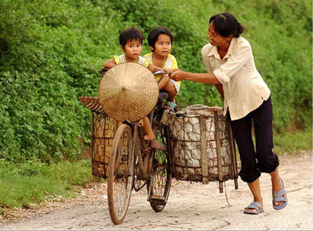
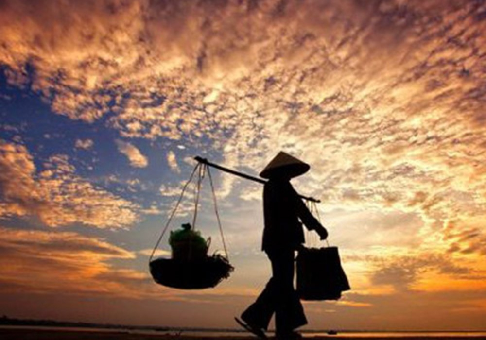
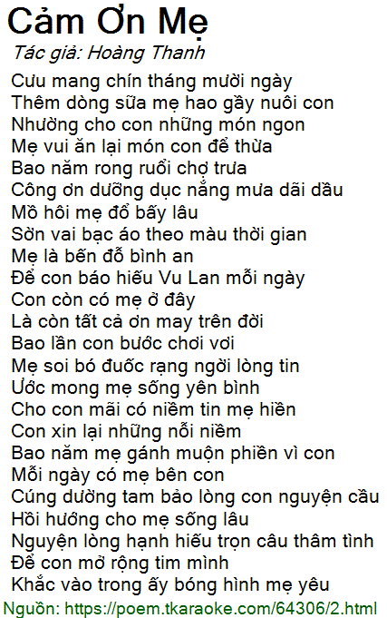

Mẹ - Người phụ nữ vĩ đại nhất trong cuộc đời
Mẹ - một tiếng gọi đơn giản nhưng chứa đựng cả bầu trời yêu thương. Dù thời gian có trôi qua bao lâu, dù con có đi đến bất kỳ đâu, thì tình mẹ vẫn luôn là ánh sáng dẫn lối con trên mọi nẻo đường.
Người mẹ Việt Nam từ bao đời nay luôn mang trong mình sự tần tảo, hy sinh. Mẹ có thể không phải là người phụ nữ giàu có, nhưng mẹ luôn giàu lòng yêu thương. Đôi tay mẹ chai sạn vì những ngày dài lao động, nhưng cũng chính đôi tay ấy đã vỗ về con khi con vấp ngã.
Sự hy sinh thầm lặng
Bao thế hệ người mẹ Việt Nam đã sống vì con, quên đi những ước mơ của riêng mình để vun đắp tương lai cho con cái. Mẹ sẵn sàng thức trắng đêm khi con ốm, sẵn sàng gánh vác mọi khó khăn chỉ mong con có một cuộc sống đủ đầy.
Trong những năm tháng chiến tranh, người mẹ Việt Nam không chỉ là hậu phương vững chắc mà còn là những anh hùng thầm lặng. Họ gạt đi nước mắt, tiễn chồng, tiễn con ra chiến trường với một niềm tin mãnh liệt vào hòa bình.
Lời cảm ơn gửi đến mẹ
Mẹ là điều tuyệt vời nhất mà cuộc đời đã ban tặng cho mỗi chúng ta. Hãy luôn trân trọng từng khoảnh khắc bên mẹ, đừng ngần ngại nói lời yêu thương, và hãy dành cho mẹ những điều tốt đẹp nhất.
